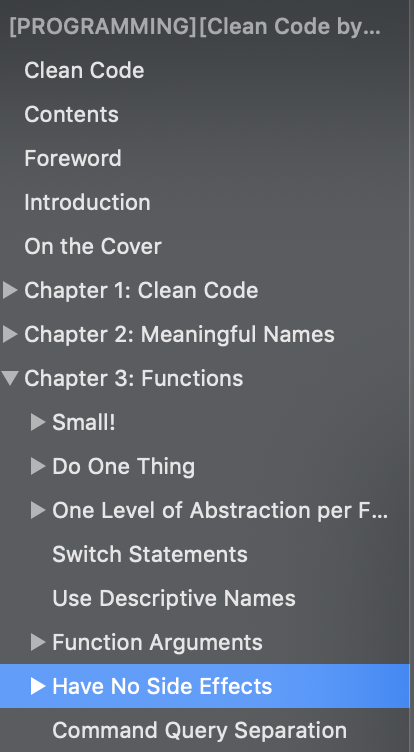
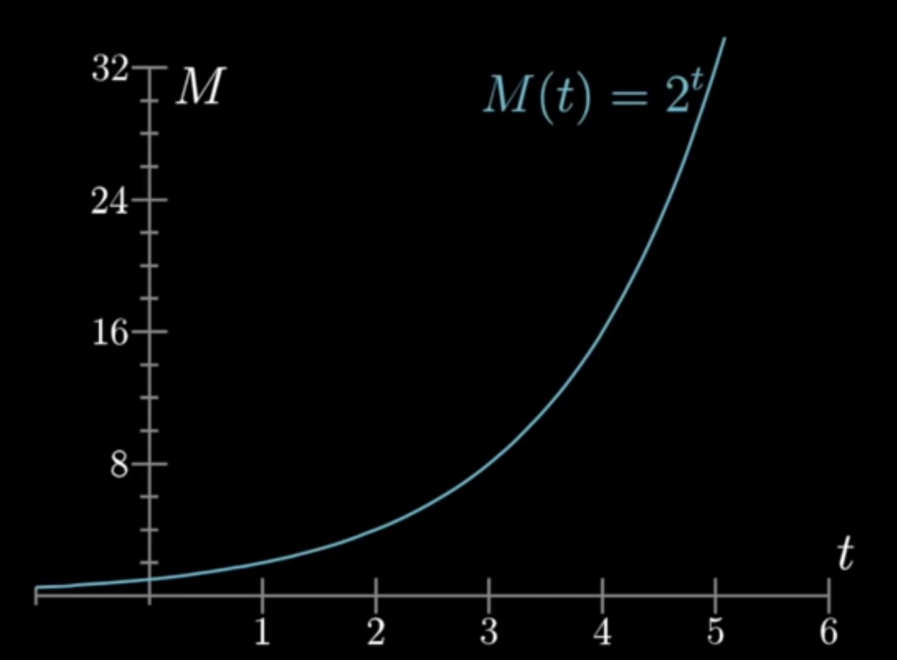

A new way of thinking
The first building block
Single responsibility
f(x) = x + 1
1 input => 1 output
No side effect
Expression vs Statement
Immutable vs Mutable
Declarative vs Imperative
Haskell:
add :: Int -> Int -> Int
add x y = x + y
Javascript:
const add = x => y => x + y;
// Note the similarity of the arrows
Haskell:
add69 :: Int -> Int
add69 = add 69
Javascript:
const add69 = add(69);
Haskell:
getApiURL :: HostName -> ResourceName -> Int -> IO ()
getApiURL x y z = ...
getUserURL :: Int -> IO ()
getUserURL = getApiURL "localhost:3000" "users"
Javascript:
const getApiURL = apiHostname => resourceName => resourceId =>
`https://${apiHostname}/api/${resourceName}/${resourceId}`;
const getUserURL = getApiURL('localhost:3000')('users');
map, filter, reduce, some, every... These are higher order functions
Because functions (behaviors) are data too!
Pass function into other function is like dependency injection in OOP
Dependency injection relies on interface
Higher order functions rely on function type
map :: (a -> b) -> [a] -> [b]
filter :: (a -> Bool) -> [a] -> [a]
reduce :: (b -> a -> b) -> b -> [a] -> b
Filter a list of employees to get everyone that are:
let awesomeEmployees = [];
for (let i = 0; i < employees.length; i++) {
const employee = employees[i];
if (employee.age < 28 &&
employee.playFifa &&
employee.wpm > 80) {
awesomeEmployees.push(employee);
}
}
const awesomeEmployees = employees.filter({age, playFifa, wpm} => age < 28 && playFifa && wpm > 80);
// Note the use of destructuring, Haskell has pattern matching
What if we want to store and update the conditions on the fly?
conditions = [(< 28) . age, (== True) . playFifa, (> 80) . wpm]
getAwesomeEmployees :: [ Employee ] -> [ Employee ]
getAwesomeEmployees = filter awesome
where awesome employee = and $ map ($ employee) conditions
awesomeEmployees = getAwesomeEmployees employees
FP programs are built by composing small functions
Example: Calculate the average age of all employees
averageAge :: [ Employee ] -> Float
averageAge = average $ map ( . age )
const averageAge = compose(
average,
map(prop('age'))
);
I need to generate a chart that shows revenues for a period of time
// $callback :: (startDate, endDate) -> result
public function mapInRange($callback)
{
// [1, 3, 5, 7] -> [ [1, 3] , [3, 5] , [5, 7] ]
$dateRanges = $this->transformFlatToCouple($this->dates);
foreach ($dateRanges as $dateRange) {
$endResult = $callback($dateRange['start'], $dateRange['end']);
$formatedDate = $dateRange['end']->copy(); // clone because of mutable Carbon object
$label = $this->formatDate($formatedDate);
$data = [
'label' => $label,
'data' => $endResult,
];
$newData[$label] = $data;
}
return $newData;
}
What if the input is not an array?
What if some functions along the way return null or undefined?
map :: (a -> b) -> [a] -> [b]
They are just like classes, but better, and immutable
Each of these types has a number of functions that can be used on them just like a method
The difference is that the function is separated from the data structure
Any function that returns a Maybe type signaling that this function can fail
Maybe = Nothing | Just a
head :: [a] -> a
safeHead :: [a] -> Maybe a
printFirstEmployee :: [ Employee ] -> Employee
printFirstEmployee = print . head
-- If the list of Employee is empty then a run time exception will be thrown (print null)
safePrintFirstEmployee :: [ Employee ] -> Maybe Employee
safePrintFirstEmployee = (map print) . safeHead
Any function that produces side effect (effects that are not in the program's control like reading, storing to the database, calling other services' API) will have to wrap the result/error in a "container", in a type called IO in Haskell, Task in Javascript.
const getFileName = () => new Promise(res => { setTimeout(res, 1000, 'fileName') });
const writeToFile = filePath => new Promise(res => { setTimeout(res, 1000, `write to file ${filePath}`) });
getFileName()
.then(x => `path/to/file/${x}.txt`)
.then(writeToFile)
.then(console.log, console.error);
const getFileName = () => Future((rej, res) => { setTimeout(res, 1000, 'fileName') });
const writeToFile = filePath => Future((rej, res) => { setTimeout(res, 1000, `write to file ${filePath}`) });
getFileName()
.map(x => `path/to/file/${x}.txt`)
.chain(writeToFile)
.fork(console.error, console.log);
Higher order, pure functions: map, filter, reduce, every, some
Basic functor / monad / applicative: Maybe, Future